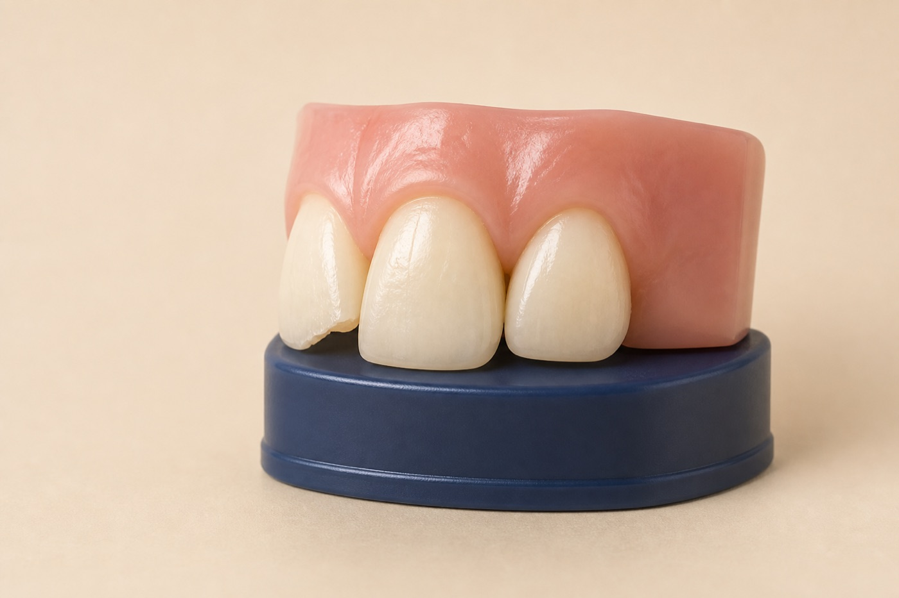

Plan
Select shape, shade, and the amount of tooth repair needed.
Composite fillings and bonding in Renton, WA
Composite can restore cavities or conservatively refine edges, shape, spacing, and symmetry. The goal is a repair that blends naturally while preserving healthy tooth structure.

Your treatment path
Many repairs can be completed in one visit after diagnosis and planning.
Select shape, shade, and the amount of tooth repair needed.
Remove decay or minimally prepare the surface when indicated.
Layer and shape the resin for strength and a natural contour.
Refine the bite, texture, margins, and polish.
Composite is repairable but not permanent. Its longevity varies with size, location, bite, diet, habits, and home care.
Two uses, one material
Composite is versatile, but the same solution is not ideal for every defect. We consider the size, location, appearance, and forces on the tooth.
Replace decay or a failing filling while blending with nearby tooth structure.
Restore small areas of lost shape when the bite can support the repair.
Adjust small gaps, proportions, asymmetry, or isolated discoloration.
What we evaluate
We look at why the tooth chipped or wore before adding material. Sometimes orthodontics, a veneer, a crown, or bite protection offers a more predictable path.
Composite FAQ
Both use tooth-colored resin. A filling replaces decay or damaged tooth structure, while bonding often refers to cosmetic reshaping or repair.
Longevity varies with location, bite, habits, maintenance, and repair size. Bonding can stain, chip, or wear and may need polishing or replacement.
Bonding can close some small spaces, but tooth proportions, bite, and gum health determine whether it is the best option.
Composite comes in multiple shades and translucencies. Matching depends on tooth color, lighting, location, and repair size.
We can compare conservative repair options and explain what each one requires.